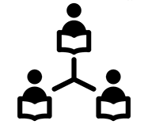

Projects
SCALE
Student-Centered Adaptive Learning Engine
NSF grant IIP-1346448
SCALE is a system for providing a personalized learning experience for students using educational software. This technology can learn from the students themselves and improve over time using data-driven methodologies and a human-centered approach. While it has long been known that personalized educational software is more effective, it is rarely implemented due to the traditionally high cost of content development. SCALE provides machine learning techniques and algorithms, based on award-winning, cutting edge research, that dramatically reduces the cost of development and thereby allows the widespread implementation of truly adaptive computer-based training.
LOGIC
Linkage Objects for Generalized Instruction in Coding
NSF grant IIP-1449001
LOGIC represents a more generalized and data-driven approach towards adaptive instruction and hint feedback for learning programming languages. LOGIC is currently under development for teaching the Java programming language, but the methods being developed are equally applicable to other languages. The key innovation of the LOGIC system is the use of linkage objects that store the most common and effective solutions for programming problems from across thousands of students, in order to provide just-in-time feedback and hints that improve student engagement and success.
HPIT
Hyper-Personalized Intelligent Tutoring
HPIT is a web service that provides developers of educational software the framework required to make their products personalized to students. HPIT is able to manage non-cognitive student attributes such as student preferences and also support customized calculations of non-cognitive factors, such as detecting boredom, due to the highly distributed architecture which facilitates the ability to create new plugins that can connect and interact with the system in a clean and robust manner. In addition to developing the HPIT architecture, TutorGen is also building plugins that implement methodologies and algorithms based on the latest research in ITS (Intelligent Tutoring Systems) and EDM (Educational Data Mining) in a cost-effective and widely accessible manner.